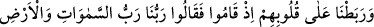
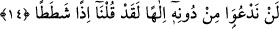

Kâbe olur sonunda senin seferlerin
14. Onların kalplerini metîn kıldık. O yiğitler (o yerin hükümdarı karşısında)
ayağa kalkarak dediler ki: “Bizim Rabbimiz, göklerin ve yerin Rabbidir. Biz,
O’ndan başkasına ilah demeyiz. Yoksa saçma sapan konuşmuş oluruz.
“Onların kalplerini metîn kıldık.” Güçlendirdik de vatanı terk etmek, âile ve arkadaş
çevrelerinden ayrılmak, hazırlanmış kendilerini bekleyen nice nimetleri ellerinin
tersiyle itmekle gelecek sıkıntılara sabretmeyi göze aldılar. Zâlim kral Dakyanus’u
reddederek hiç korkmadan ve sakınmadan onun karşısında açıkça hakîkatı söyleme
cesaretini gösterdiler. Bir hadiste şöyle buyrulmuştur: “Cihadın en üstünü zâlim sultan
karşısında hakîkatı söylemektir.”[161] Çünkü bilfiil cihad eden mücâhid, korku ile ümid
arasında gidip gelir. Oysa zalim yöneticinin karşısında hakkı söylemeye azmeden kişi,
öldürülmeyi göze almış demektir. Onun yaptığında ümidden ziyade korku baskındır.
“el-Esâs” da şöyle denilmiştir: “ Rabata alâ kalbihî” ifâdesi mecâzî bir
ifâdedir. Kalblerin üzüntü ve korkudan yerinden sarsıldığı bir vakitte onu sabırlı kıldı,
sağlamlaştırdı, demektir. Nitekim böylesi bir durum hakkında Allah Teâlâ şöyle
buyurur: “Gözler (şaşkınlıktan ötürü yerlerinden) kaymış, yürekler (korkudan)
hançerlere dayanmıştı.” (el-Ahzâb, 33/10) Denilir ki: “Kişi bir işte sebat ettiği vakit:
“rabeta kalbehû” denir. Bu, bir temsildir. Burada kalbin sabırla tesbit edilmesi,
hayvanın yularla bağlanmasına benzetilmiştir.
“O yiğitler (o yerin hükümdarı karşısında) ayağa kalkarak:” Yâni, dinin esaslarını
açıklamak üzere dimdik durdular. Onların ayağa kalkmasından maksad, putlara tapmayı
terk etmesi husûsunda uyarmak üzere -yüreklerinde hiçbir sıkıntı ve korku
hissetmeksizin- zâlim kral Dakyanus’un huzurunda dikilmeleridir de denilmiştir. Bu
anlayışa göre bir sonraki âyetteki: “Onlar” önceki kısımla bağlantılı değildir. Gençlerin
kralın huzurundan çıktıktan sonra söyledikleri bir sözdür.
et-Te’vîlâtü’n-Necmiyye’de şöyle der: “Dünyaya ve onun âlâyişine iltifat etmemeleri
ve büsbütün Allah’a yönelmeleri için “onların kalplerini metîn kıldık.” Bu sebeple
uzun süreli uykudan uyandırılmalarından sonra dünyalık hiçbir şeyi tercih etmediler.
Sadece Hakk’ın civârına dönmeye rağbet ettiler.”
“Dediler ki: “Bizim Rabbimiz, göklerin ve yerin Rabbidir.” O, bu âlemin Rabb’i,
sâhibi ve yaratıcısıdır. Put da âlemin bir parçasıdır. O da mahlûktur ve ibâdete elverişli
değildir. “Biz, O’ndan başkasına ilâh demeyiz.” O’ndan başkasına ne müstakil olarak,
ne de onunla birlikte ebediyyen kulluk etmeyiz, mâbûd demeyiz. Burada Allah hakkında
“Rab” ifâdesi kullanılırken diğerlerine “ilâhlar” denilmesi, muhâlifleri reddetmek